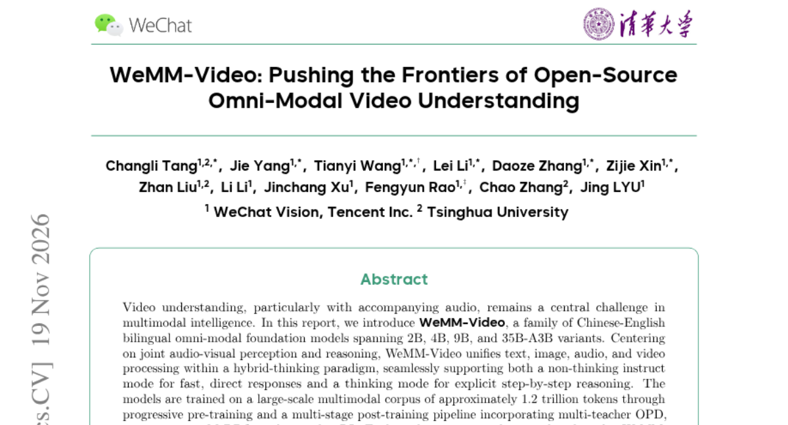

新智元称Claude或以1700万行代码证明黎曼猜想
该报道标题称Claude以约1700万行代码证明黎曼猜想，但提供材料仅含标题，没有给出形式化证明、验证过程或同行评审信息。因此这只能算待核实的说法，证明是否成立、代码内容为何均未知。 机器之心 · 官方 RSS：突发！Anthropic数学家宣称用Claude证明黎曼猜想
该报道标题称Claude以约1700万行代码证明黎曼猜想，但提供材料仅含标题，没有给出形式化证明、验证过程或同行评审信息。因此这只能算待核实的说法，证明是否成立、代码内容为何均未知。 机器之心 · 官方 RSS：突发！Anthropic数学家宣称用Claude证明黎曼猜想
报道称OpenAI开始大规模封禁账号，以反制对其模型的蒸馏行为，并称之为“反蒸馏战”。材料只有标题，被封账号规模、判定标准及是否有申诉渠道均未说明，具体执行细节仍待验证。
该篇以一位菲尔兹奖得主深夜痛哭、吵醒女儿为叙事切口，讨论AI对数学家体面与职业心态的冲击。材料仅见标题，未提供当事人姓名、具体事件经过或可核实的第一手说法，属人物化叙述。
报道称马斯克表示“也许该给亚马逊添个对手”，网友已替设想中的公司起名。材料只有标题，没有说明是否已有立项、团队或时间表，属于公开场合的表态与网络讨论，不能视为新公司成立。
报道称谷歌一篇重磅论文表示内部已实现RSI（递归自我改进），把Opus的经验喂给Gemini，使AI拥有可进化的记忆。材料仅含标题，实验设置、改进幅度与“内部已实现”的界定都不清楚，需读原文核实。
报道称对AI说“下次注意”没有用，马斯克麾下工程师主张把纠错锁进代码，即以工程约束代替口头提醒。材料只有标题，缺少具体案例与效果数据，属经验性观点而非受控实验结果。
报道称有人手搓12年，人类数学家证明黎曼猜想却被AI“截胡”，并称陶哲轩、邓煜已作回应。材料仅含标题，未给出证明文本、回应原话或验证结论，与同源另一篇说法需一并核验。
机器之心报道的主题是「Flagship布局伦敦，打造AI原生科学创业平台」。
今日收录的报道集中在两条线索：一是黎曼猜想相关消息，同一来源分别以“Claude 1700万行代码证明”和“人类数学家被AI截胡”为题报道，措辞耸动但缺少可核对细节，应视为待验证说法而非已确认证明[1][7]；二是大模型竞争与安全，OpenAI被报道大规模封号打击“蒸馏”[2]，社区讨论称其隐藏推理提取成功率从54%降至0.2%[8]，谷歌论文称内部已实现RSI并让模型间经验迁移[5]。 阅读建议：这批材料多为二手转述，标题情绪化明显，涉及“证明”“RSI”等强结论时需回到原文核验；马斯克相关两条分别是商业设想与工程经验分享，证据强度有限[4][6]，菲尔兹奖得主那条更接近人物特写而非研究结果[3]。

推荐理由 值得核对 TwinLab-Bench 如何用 TwinLab agent 把 52 个任务中自设计实验的执行读数锚定到真实实验室记录，以及最强模型仅 45.0 分下的失败归因分析是否支撑其评测有效性。
DeepSeek 中文选读卡
该研究提出 TwinLab-Bench，用于评估AI科学家自主设计实验的能力；任务覆盖物理科学、生命科学和工程领域的52项实验，支持逾100种实验操作类型，并以真实实验室记录中的隐藏答案作为评分依据。作者报告称，与仅见任务描述的模型相比，TwinLab代理大幅减少了偏离真实记录的读数和重复请求下不一致的回答，并用闭卷测试控制记忆性作答；前沿模型在该基准上仍表现困难，最强模型得分为45.0。适用范围限于基准所述的实验类型和记录条件；仍缺少独立复现和外部验证。精读时值得核查：隐藏答案的评分规则如何界定，以及45.0分对应怎样的分数尺度。没有对照或实验条件时应直接说明。
评估 AI 帮助科研的能力，先分清测量的是答题得分、节省的时间，还是由独立实验验证的结果。观察样本如何选取、有没有对照以及评价数据是否泄漏。
评估 AI 帮助科研的能力，先分清测量的是答题得分、节省的时间，还是由独立实验验证的结果。观察样本如何选取、有没有对照以及评价数据是否泄漏。
有公开出处的英文主题讲解，可先补概念，再回到当前条目。

推荐理由 值得精读 Skill-FT 如何用自然语言技能抑制教师轨迹中的不良行为，并核对在 Terminal、Search、软件工程任务上 4B/9B 模型相对 Vanilla SFT 提升 1.42–8.99 个百分点的消融与轨迹分析。
DeepSeek 中文选读卡
研究提出Skill-FT与AutoMaster，用自然语言技能干预教师轨迹，筛选数据并对目标模型微调，让同一模型成为更好的教师。作者报告在Terminal、Search和软件工程任务、4B与9B模型上，相对仅用成功无引导教师轨迹的SFT，平均性能提高1.42至8.99个百分点，且教师、任务池、训练集大小和SFT配方固定；六种设置中保留技能指令的SFT均值更高。适用范围限于所述任务与设置，缺独立复现和更广模型验证；无对照或实验条件时不能推断因果。精读宜核查提升是否由数据选择与技能上下文混杂驱动。

推荐理由 值得核对 WeMM-Video 的渐进预训练与多阶段后训练（多教师 OPD、MrDPO、专家 RL）如何在约 1.2 万亿 token 上统一音视频理解，以及 35B-A3B 在 120 多个基准上的开源 SOTA 结论与复现流程。
DeepSeek 中文选读卡
WeMM-Video 让同一模型联合处理视频画面、音频和文本，并支持中英文。作者报告训练语料约 1.2 万亿 token，评测覆盖 120 多个基准，还发布了模型与复现流程。 如果你研究多模态推理，可先看有声与无声视频的分项对照，以及 9B 模型与更大模型的比较条件。这些性能结论来自作者评测。
视频理解同时考察画面、声音和事件顺序。阅读评测时，可留意答案是否必须依赖时间变化，还是仅凭一帧就能猜中。
作者在参考文献 [62] 中列出了这项工作。OmniCompass 分开考察视觉与视听联合证据，要求回答目标出现的时间、位置或内容。可用来理解论文所说的全模态能力。
作者在参考文献 [6] 中列出了这项工作。TemporalBench 用事件顺序、动作次数等问题考察时间理解，可检查模型是否真正用到了视频的变化。
作者在参考文献 [27] 中列出了这项工作。它与本文共同讨论understanding、video，可对照两篇所用任务和评测条件。
视频理解同时考察画面、声音和事件顺序。阅读评测时，可留意答案是否必须依赖时间变化，还是仅凭一帧就能猜中。
有公开出处的英文主题讲解，可先补概念，再回到当前条目。
今天暂无收录。